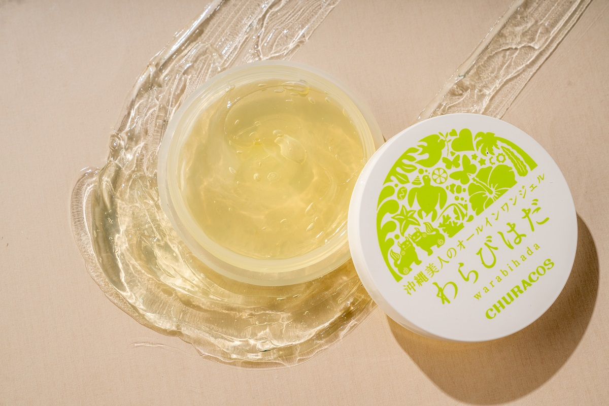
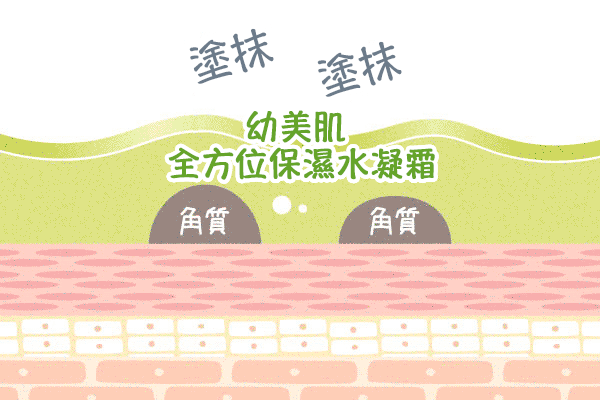
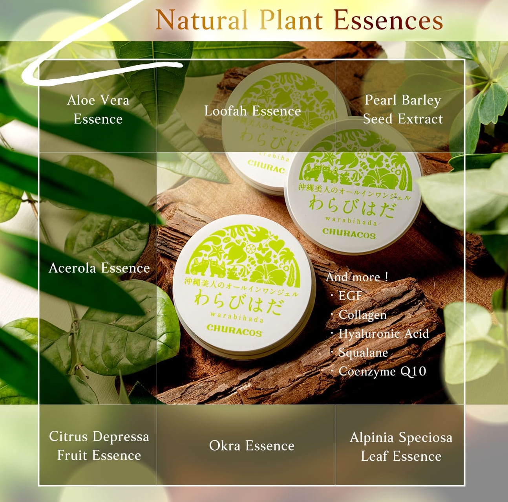
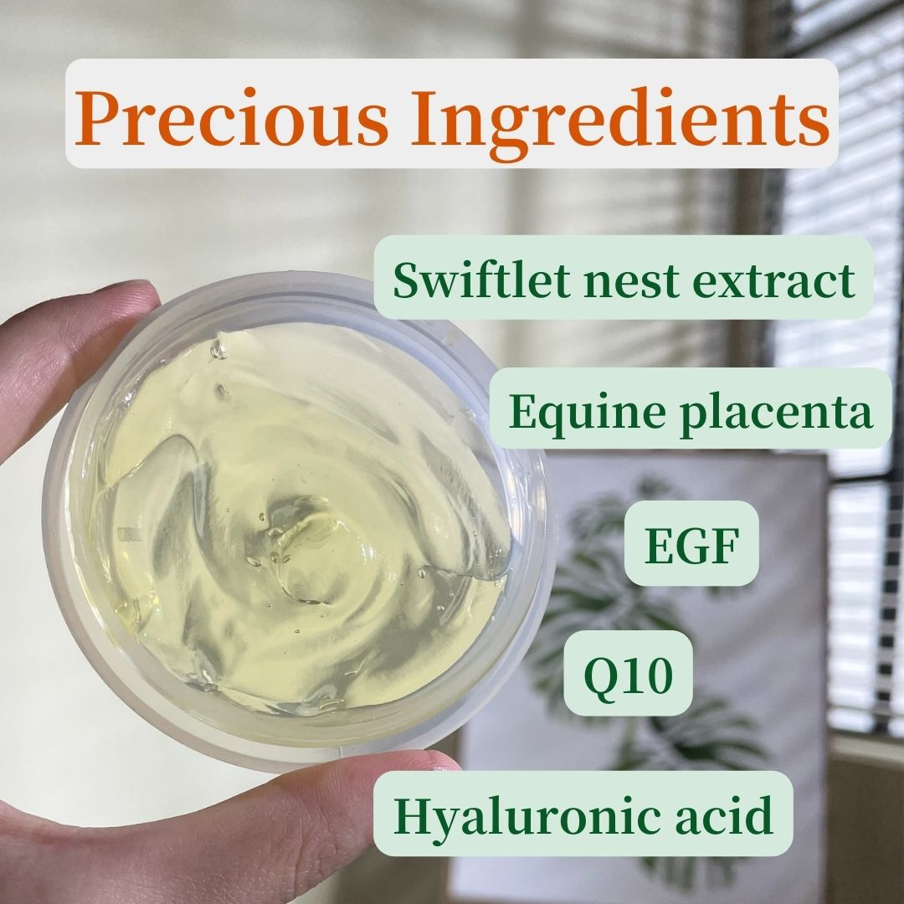
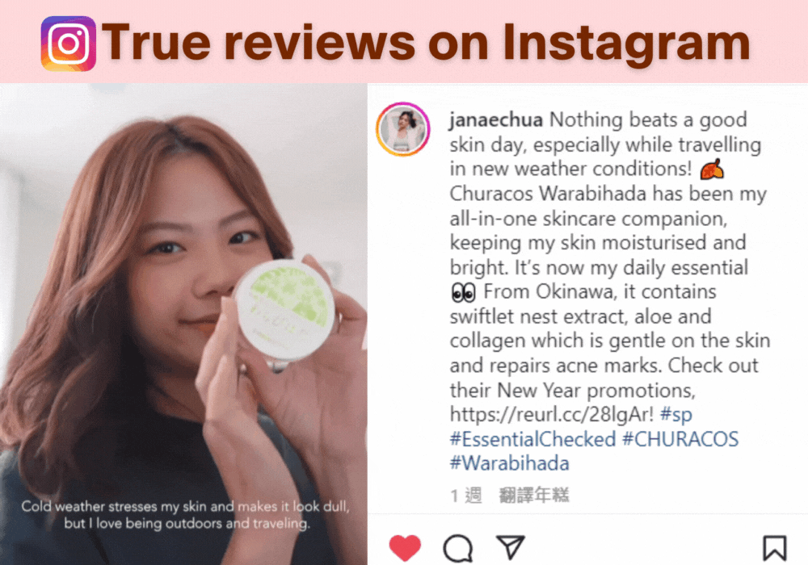
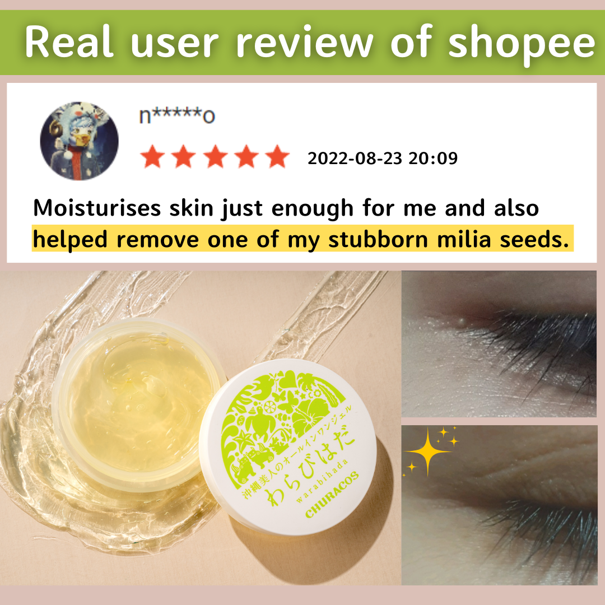

easily get rid of acne scars and
granulation problems easily!

Recommended by Japanese female artists & TV program
Do you have acne problems, or want to get rid of the dense and bumpy acne marks & milia on your face? Have you used many products but they did not work? Do you want to try cosmetic surgery, but you are afraid of the pain or the after-effects? Worry NO MORE! Today, I'm going to introduce the swiftlet nest extract repairing gel from Okinawa, Japan: CHURACOS Warabihada!
This is an amazing Japanese skincare essential✨ Not only does it repair acne & acne scars and remove rough bumps, also softens milia seeds effectively.
How are these annoying bumpy particles formed?
Weaken skin metabolism leads to weak skin protection. And acne occurs when your hair follicles become clogged with oil and dead skin cells. Granulomas/milia seeds are bumps created by the proliferation of skin tissues, and they tend to appear around the eyes and neck areas. The reason for these problems is poor metabolism. How can CHURACOS Warabihada slove these problems completely?
The reason is the "exclusive formula"
① Super luxurious active ingredients! It calms and soothes disordered skin, reduces inflammation, boosts metabolism, and softens granulations.
② All-in-one, no additives, jelly texture can be absorbed in seconds, which is super moisturizing and deeply hydrated. Help stabilize skin condition.
Super luxurious X really effective, exclusive formula is open to the public!
CHURACOS Warabihada contains the following expensive and premium ingredients:
CHURACOS exclusive OKINAWA local botanical extracts:
❤️Okinawa citrus depressa, aloe vera, okra ... etc.
Give you full of natural repair and soothing energy to calm skin, anti-inflammatory, and help restore the best condition of disordered and damaged skin.
Plus the premium beauty ingredients:
❤️ EGF (Nobel Prize winning ingredient) ▶ Boosts skin metabolism, clears granulation, and smoothes roughness and uneven acne marks
❤️ Equine Placenta Extract ▶ Stimulates collagen production and accelerates metabolism of milia seeds
❤️Swiftlet Nest Extract ▶ Chinese nourishment, softening milia seeds
Apply it around the eyes, neck, chest, wherever there are milia seeds! One bottle is all it takes!
Did you know? A complicated skin-care routine is not only time-consuming but also burdensome to the skin with
repeated applications.
CHURACOS Warabihada’s All-in-One
skin-friendly formula can be applied to the whole face and body. It has excellent improvement
effects on acne particles, small granules around the eyes, neck and chests. One jar contains ①Toner ②Serum
③Lotion ④Primer ⑤Cream ⑥Night Mask
Or adjust the amount according to your skin condition "thinly applied for hydration, thickly applied for repair". Cleanse your face and apply Warabihada to your skin in 2 easy steps! It is simple to return to smooth and flawless skin. ❤️
Recommended by many popular KOLs on social media, full of trust.
Not only is it loved by the KOLs, but the effect of CHURACOS Warabihada is obvious to all. The social platform Instagram, from Taiwan, Hong Kong to Singapore and Malaysia, many people share the experience of use: refreshing, non-sticky, super absorbent, effective in eliminating acne and milia seeds!
Beauty comes from clever skin care. Bottles and jars of care products burn money and waste time, why not
choose a jar of effective and reliable CHURACOS Warabihada All in One
Gel🏆